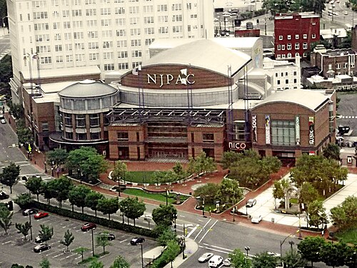
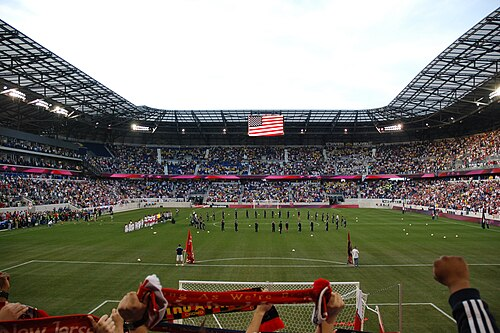
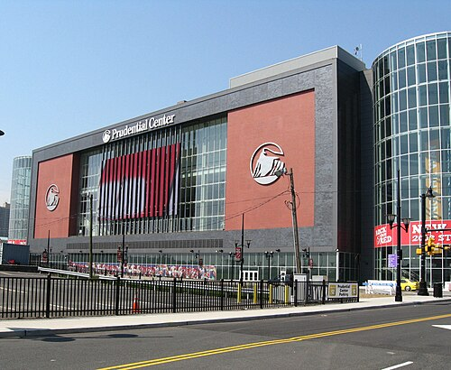

This map shows 16 of the most-searched sights in Newark as photo spots, ranked by how often people search for them: NJPAC, Sports Illustrated Stadium, Prudential Center, Newark Penn Station and Newark Museum of Art lead the list. Every spot has a pin on the subject and a phone icon showing where to stand, with tips for shooting it on your phone: which lens to use, how to frame it, a settings tip and the best time of day. Directions and Navigate buttons take you to the standing point on foot or by public transport. 3 spots are free to view; the full map is for members.
The 3 free photo spots
1New Jersey Performing Arts Center

The New Jersey Performing Arts Center, usually called NJPAC, is one of the largest performing arts centres in the United States and a landmark of Downtown Newark. It opened in October 1997 on the site of the former Military Park Hotel. It is the home of the New Jersey Symphony Orchestra. The architect, Barton Myers, chose brick, exposed steel and glass to echo Newark's industrial past, and the result looks like a working part of the city rather than a grand monument.
That mix of materials is why it photographs well. From Military Park you see the facade across Park Place, with the park's trees in the foreground and the downtown high-rises behind. The trees give you a natural frame and the tall buildings show where the centre sits in the city. NJPAC is not the only building in view from here, so decide whether you want a wide scene of the whole street or a tighter shot of the centre alone.
Stand on the park side facing Park Place and let the facade fill the middle of the picture. Wait for a gap in the traffic and passers-by if you want a clean frame. Keep the phone level so the vertical lines of the building stay straight. If you want a second angle, cross the street and photograph the entrance and the brickwork up close.
Where it is: NJPAC is in Downtown Newark, in the city's cultural district around Military Park and Washington Park. It stands just west of the Passaic River waterfront, with the Prudential Center a little to the south.
Shooting it on your phone
Lens: Start with the default lens (1x) for the facade and the street in one frame. Switch to ultra-wide (0.5x) if trees or people block the view and you want to fit in more of the buildings. Use the telephoto (2x or more, depending on your phone) for brick and glass details.
Where to stand: Stand in Military Park (park side facing Park Place, where NJPAC sits across the street). NJPAC's facade across Park Place, framed by the park's trees and the downtown high-rises around it.
Framing: Turn on gridlines and line the building up with the vertical lines so it does not lean. Use a tree branch or trunk at the edge of the picture as a frame. Keep the facade in the middle of the frame and let the high-rises fill the background. For a second angle, cross Park Place and shoot the entrance from the pavement.
Settings tip: Tap the facade to focus, then lower the exposure slider a little if the sky is bright, so the brick keeps its colour. If the scene is wider than your screen, try panorama mode and hold the phone steady as you sweep.
Best time: Daylight with soft, even light gives the best colour on the brick. Around dusk, when the building's lights come on, try night mode and hold the phone still.
2Sports Illustrated Stadium

Sports Illustrated Stadium is a football (soccer) ground on the Passaic River waterfront, home to the New York Red Bulls and Gotham FC. It opened in 2010 as Red Bull Arena and took its current name in December 2024. The shape is what you will want to photograph. A curved, partly translucent fabric roof wraps around the whole stadium, and about 60 feet (18 m) of it lets daylight through. It holds 25,000 seats, and the roof covers every one of them.
The stadium is in Harrison, across the river from Newark, so the map's stand-here point is not at the ground itself. It is at East Newark Riverfront Park, a riverside green space with walking paths, at the corner of Clay St and Passaic Ave. From here the stadium lies to the south-east, a little over two kilometres away. This is a calm place to photograph the open water of the Passaic and the skyline beyond. Whether the stadium roof shows from the park is not confirmed, so have a look on the ground. If it does, it will be small and distant.
For a closer shot of the roof, the stadium exterior is the alternative. One guide says new housing now blocks the clear view seen in older photos, so expect a narrower angle than you may have seen online. Frame the roof against the sky, keep the phone level, and let the curve do the work.
Where it is: The stadium is in the Riverbend District of Harrison, on the east bank of the Passaic River, directly across the water from Newark.
Shooting it on your phone
Lens: Start with the ultra-wide (0.5x) for the river and sky. Use the default lens (1x) for a balanced view of the water and skyline. If the stadium roof is visible, try the telephoto (2x-5x, depending on your phone) to pick it out.
Where to stand: Stand in East Newark Riverfront Park (Clay St and Passaic Ave, riverside edge). Open waterfront on the Passaic River, a quieter alternative to the stadium exterior; the stadium's visibility from here is not confirmed by the sources. The stadium lies to the south-east, so look that way for its roof and see whether it shows between the buildings.
Framing: Use the gridlines and place the river along the lower third, with sky above. If the stadium is visible, put its curved roof on one of the grid intersections and zoom in rather than crop later. For a closer view of the stadium exterior, go to the stadium itself and shoot the curved, translucent roof from further back, where the housing allows.
Settings tip: Tap the water or the roof to focus, then slide the exposure down a little so the sky keeps its colour. Use the telephoto at 2x or 3x for distance shots and hold the phone against a railing or your body to keep it steady.
Best time: Morning or late afternoon usually gives softer light on the water. On match days the area around the stadium gets busy, so check the fixture list before you pick a time.
3Prudential Center

Prudential Center is a large indoor arena in downtown Newark, opened in 2007. It is home to the New Jersey Devils ice hockey team, the New York Sirens and Seton Hall University's men's basketball team, and it also hosts big concerts. Fans and sports writers call it "The Rock", a nod to the Rock of Gibraltar logo of Prudential Financial, which has the naming rights.
It photographs well because the building has a clear look. The red and gray outside is inspired by Newark's bricklaying and railroad past. On the Mulberry Street side, two big cylindrical entrance towers stand out most. The front carries one of the largest LED screens in the world, about 4,800 square feet.
The best easy shot is from Championship Plaza on Mulberry Street, where a 22-foot stainless steel hockey player sculpture makes a strong foreground and the arena rises behind it. Put the figure on one side of the frame and let the building fill the rest, so the picture tells people at once where you are. The arena is big, so a wide shot of the whole building may mean a few steps back along Mulberry or Lafayette Street. For a second picture, try the front entrance, where a statue of Martin Brodeur stands in the foreground. Event days can be busy, so allow a little patience for a clear view.
Where it is: Prudential Center is in downtown Newark, New Jersey. Championship Plaza, the photo spot, is on Mulberry Street between Edison Place and Market Street, right beside the arena.
Shooting it on your phone
Lens: Start with the default lens (1x) so the sculpture and the arena sit together in one frame. If the building will not fit when you are close to the sculpture, switch to ultra-wide (0.5x). Use the telephoto lens (2x or more) for details such as the entrance towers or the LED screen.
Where to stand: Stand in Championship Plaza (Plaza on Mulberry Street between Edison Place and Market Street, near the arena). The 22-foot stainless steel hockey player sculpture in the foreground, with the arena behind it. The arena lies to the south-west of this point. From there, try to include the hockey player sculpture with the arena behind it, and adjust your position as needed.
Framing: Turn on the gridlines and put the sculpture on one third of the frame, with the arena filling the rest. Keep the phone level so the building does not lean. If you want the whole building, take a few steps back along Mulberry or Lafayette Street. For another view, walk to the front entrance and photograph Martin Brodeur's statue with the arena behind it.
Settings tip: Tap the sculpture to focus, then slide the exposure down a little if the sky is washing out. Stainless steel can glare, so check the highlights on screen. In portrait mode, the sculpture can stand out from the building, but check the edges around the figure.
Best time: Daylight makes the red and gray building and the sculpture easy to read. Visit on a day without an event for fewer people in the frame.
13 more spots for members
These spots are on the map as grey numbered pins. Where to stand, the phone tips, photos and directions for them come with Explorer membership.
- 4Newark Penn Station · members
- 5The Newark Museum of Art · members
- 6Branch Brook Park · members
- 7Cathedral Basilica of the Sacred Heart (Newark, New Jersey) · members
- 8Newark Public Library · members
- 9Newark City Hall · members
- 10Old First Presbyterian Church (Newark, New Jersey) · members
- 11Military Park (Newark) · members
- 12John Ballantine House · members
- 13Newark Paramount Theatre · members
- 14Seated Lincoln (Borglum) · members
- 15Indian and the Puritan · members
- 17Trinity & St. Philip's Cathedral (Newark, New Jersey) · members
Get every spot with Explorer membership
Explorer opens every spot on every map in the library: where to stand, how to frame it on your phone and how to get there, plus the Xdatrys Maps app with maps saved on your phone for use without signal. $9.99 a month or $59.99 a year; cancel any time.
Join Explorer Compare free and Explorer
Not ready to join?
Get Pocket Lens, our free daily smartphone travel photography newsletter.
Free, and you can unsubscribe at any time. If the form does not show, sign up on our newsletter page.
Questions
What are the top photo spots in Newark?
The first three on this map are NJPAC, Sports Illustrated Stadium and Prudential Center. They are ranked by how often people search for them. The full map has 16.
Where should I stand to photograph NJPAC?
Stand in Military Park (park side facing Park Place, where NJPAC sits across the street). Start with the default lens (1x) for the facade and the street in one frame.
When is the best time to photograph Sports Illustrated Stadium?
Morning or late afternoon usually gives softer light on the water. On match days the area around the stadium gets busy, so check the fixture list before you pick a time.
How do I get to Prudential Center?
No station or tram stop is listed for this spot, so start from the centre of downtown Newark and head for the arena by taxi or hired scooter.
Credits
Map data © OpenStreetMap contributors (ODbL); base map built with Protomaps from OpenStreetMap data. Photos from Wikimedia Commons, credited under each photo with their licence. Background reading for the free spots: New Jersey Performing Arts Center, Sports Illustrated Stadium, Prudential Center (Wikipedia, CC BY-SA). Access rules and opening times change: check before you go.